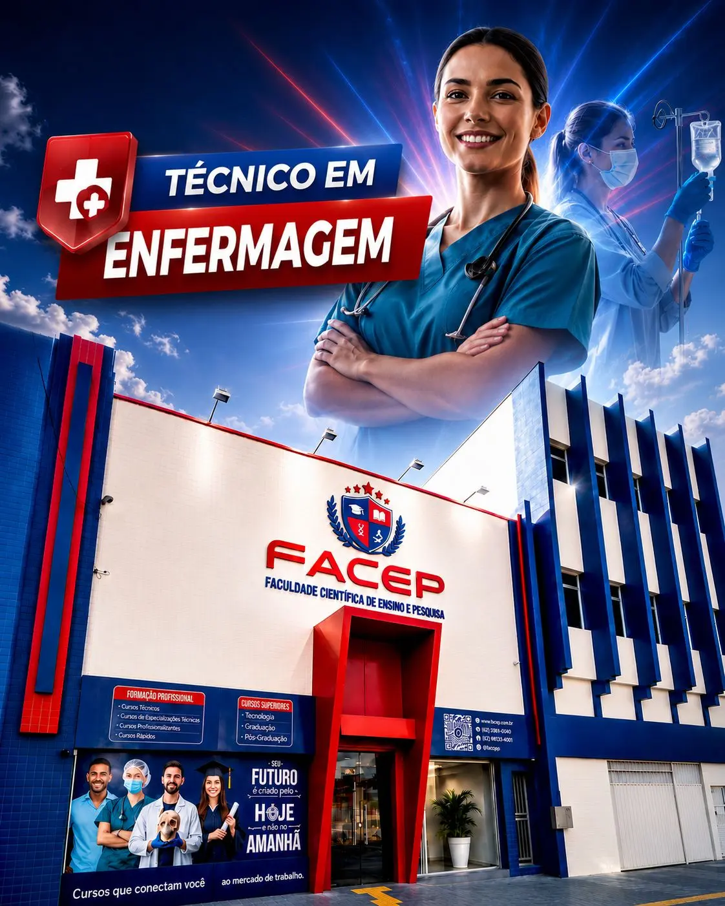

Um novo conceito
em ensino.

Técnico em Enfermagem
Sobre o Curso Técnico em Enfermagem

Nossa Identidade
A fórmula FACEP pra transformar a sua vida profissional.
Novidades
Fique por dentro das novidades.
Eventos
FACEP celebra a Cerimônia da Lâmpada
Alunos de Enfermagem marcaram o compromisso com a profissão em uma das tradições mais simbólicas da área.
Ler mais →Prática
Aulas práticas no laboratório próprio
Alunos aplicam o conteúdo teórico em procedimentos técnicos, sob supervisão de professores da área.
Ler mais →Matrículas
Matrículas abertas para o curso técnico em Enfermagem
Garanta sua vaga e comece a construir uma carreira sólida na área da saúde.
Ler mais →Momentos para compartilhar para sempre.
Confira as últimas edições da Cerimônia do Jaleco e da Cerimônia da Lâmpada.
Ver galeria completa